Overview
With the release of CRYENGINE 5.3 the old MFC Editor (up to CRYENGINE 3.8.6) has been deprecated, and is therefore no longer available for use. So to assist CRYENGINE users transition to our new QT Editor interface (CRYENGINE V onwards) we have put together the following short guide.
RollupBar
One of the main differences is the removal of the RollupBar:
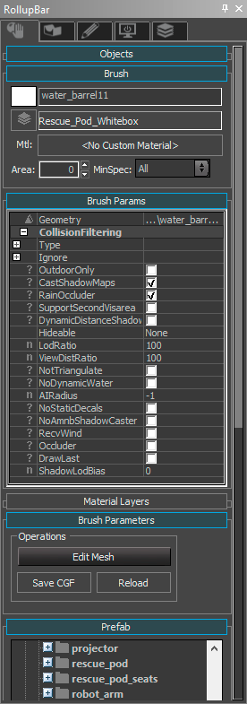
This was split into smaller tools. Starting from the left:
1st Tab (Objects)
The first tab has been replaced by 2 different tools:
| Old (MFC) | New (Qt) |
|---|---|
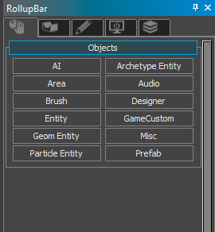 | 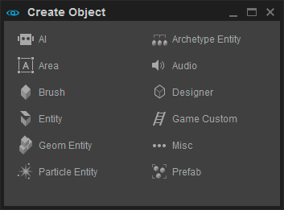 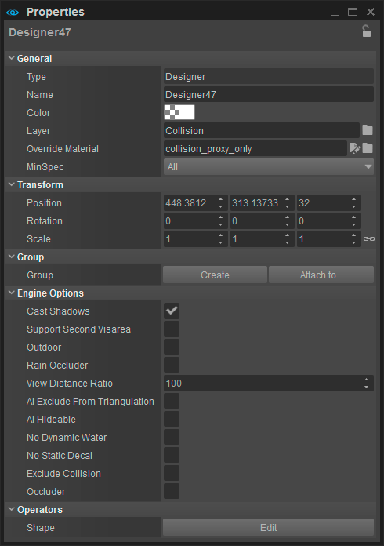 |
Create Object (Tools -> Level Editor -> Create Object and top left by default): this is the tool where the user can add all objects to a scene just like in the old Sandbox Editor.
Properties (Tools -> Level Editor -> Properties and on the right by default): this panel shows all relevant properties of the selected object.
2nd Tab (Terrain)
The second tab has been separated into 3 tools:
| Old (MFC) | New (Qt) |
|---|---|
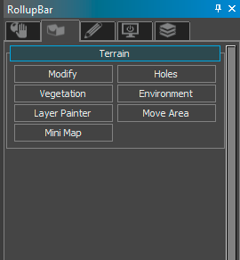 | 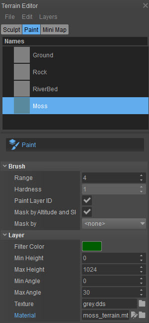 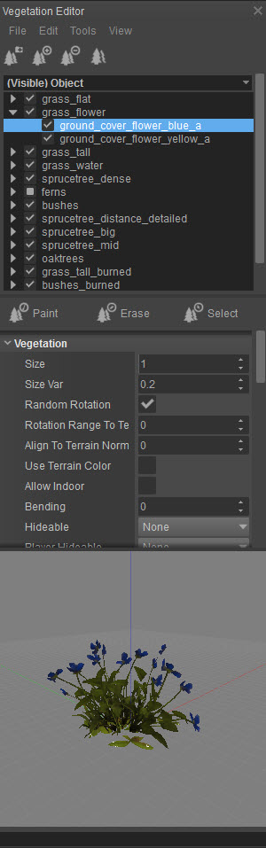 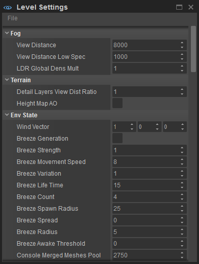 |
Terrain Editor (Tools -> Terrain Editor): this tool not only contains the elements that were previously located in the second tab of the RollupBar, but it also contains other terrain relevant tools that were scattered in different places in the old Sandbox Editor such as Terrain Texture Layers.
Vegetation Editor (Tools -> Vegetation Editor): this is a tool that has basically been stripped out of the RollupBar. However, it still has the same functionality and serves the same purpose as it did before.
Level Settings (Tools -> Level Editor -> Level Settings): most of the settings under Environment have been stripped out of the RollupBar and changed to the Level Settings. Notice that Volumetric Cloud settings have been added.
3rd Tab (Modelling)
The modelling tools in the third tab are no longer supported:
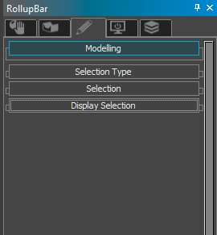
4th Tab (Display)
Most of the display settings in the fourth tab have been moved to the Display menu in the header of the 3D Viewport.
| Old (MFC) | New (Qt) |
|---|---|
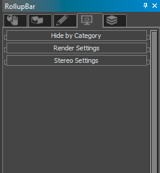 | 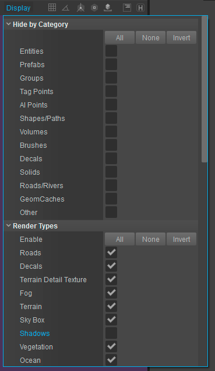 |
5th Tab (Layers)
The fifth tab has turned into its own tool, the Level Explorer. The Level Explorer also takes over the functionality of the Select Objects tool. It’s the way that the user can configure the Level Explorer tool that defines its purpose:
| Old (MFC) | New (Qt) |
|---|---|
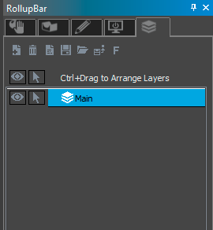 | 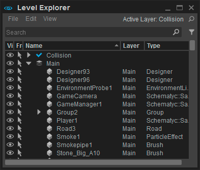 |
The Level Explorer can be configured to cover functionality of both previous tools and it can also be opened more than once, hence if you want to mimic the behavior of those tools it's completely possible.
By adding filters a user can get the same setup as the previous Select Object tool. The example below shows that filters can be setup exactly the same way as before:
| Old (MFC) | New (Qt) |
|---|---|
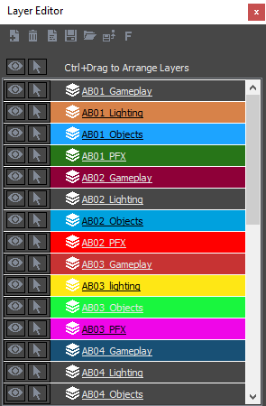 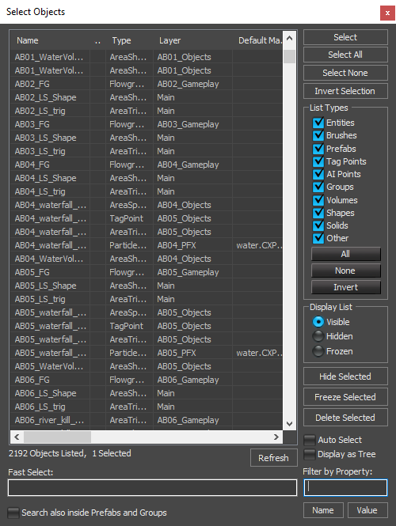 | 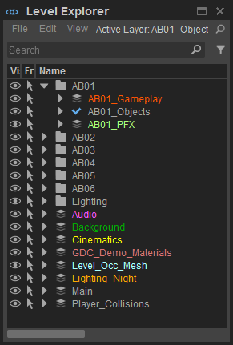 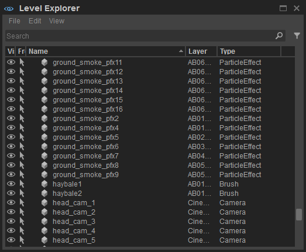 |
Filters
By using the filter system in the Level Explorer (accessed with the button), the same filter options are available, and more:
| Old (MFC) | New (Qt) |
|---|---|
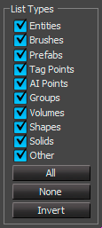 | 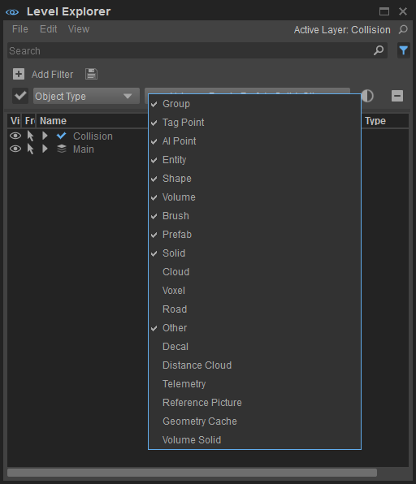 |
Other MFC Editor Tools
Lighting Tool
The functionality of the Lighting Tool was moved to the bottom left corner of the Environment Editor.
The Environment Editor is a new name for the Time Of Day Editor. The name has been changed due to our future plans of expanding its functionality:
| Old (MFC) | New (Qt) |
|---|---|
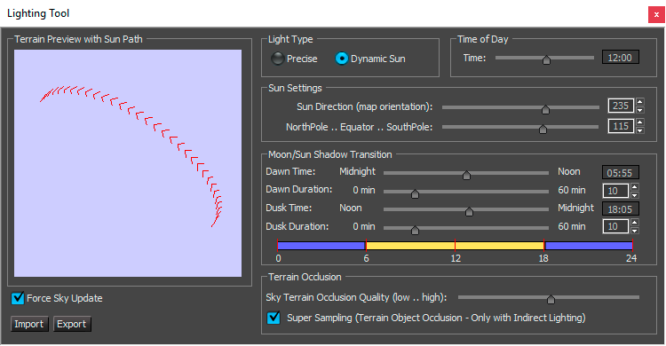 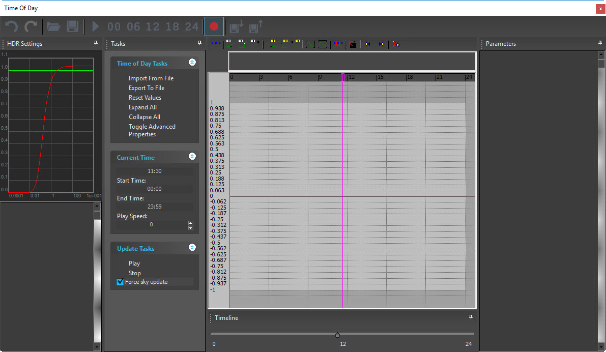 | 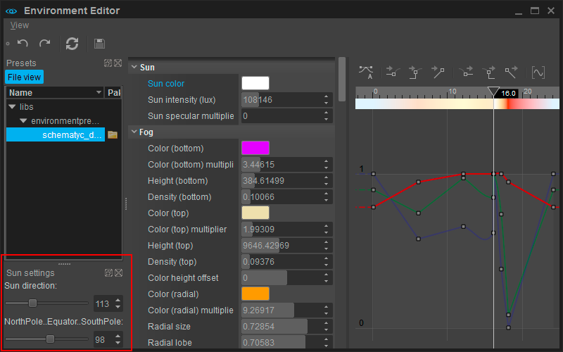 |
Navigation Toolbars and Options
| Old (MFC) | (click images to enlarge) 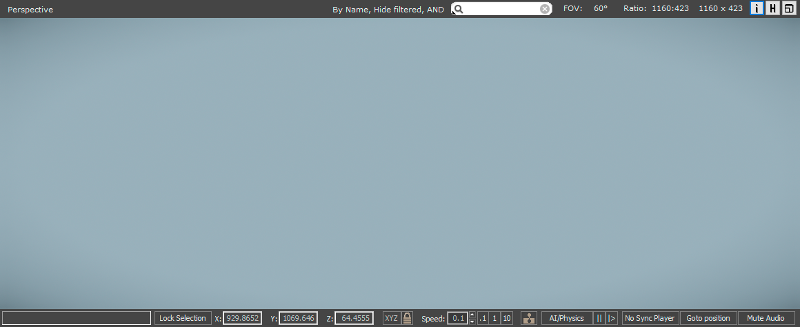 |
|---|---|
| New (Qt) | 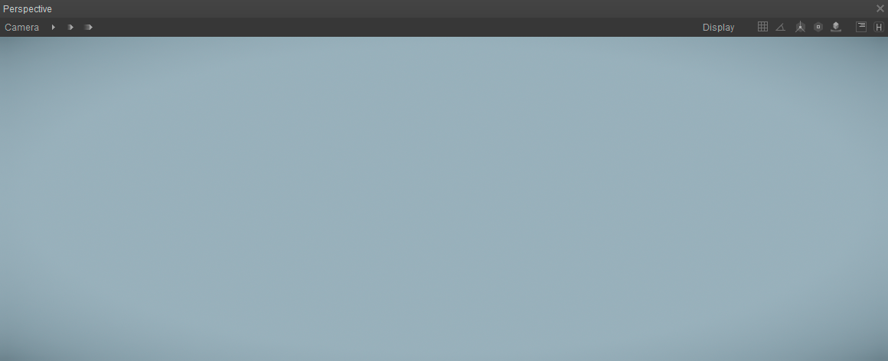 |
Camera Settings
Previously at the top of the Viewport there were options such as fov, ratio, resolution and settings inside of the perspective menu.
These options have now moved to the
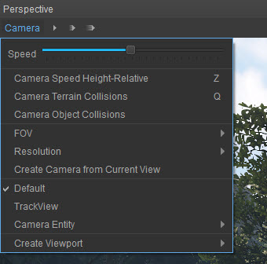
On the right side are 3 speed settings that were previously located at the bottom of the screen:
| Old (MFC) | New (Qt) |
|---|---|
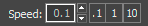 |
Snapping
The 7 icons next to the Display button in CRYENGINE V represent ways of snapping objects. These were previously located in the Object toolbar. The 6th icon is a 3 toggle type button that will change how detailed frame statistics are displayed. The 7th icon is a toggle to hide or unhide helpers:
| Old (MFC) | New (Qt) |
|---|---|
Bottom Bar
The bottom bar of the old MFC Editor has been removed. These options have been moved to different places:
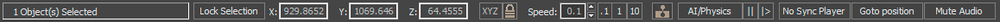
The coordinates for selected objects are now located in the Properties (when an object is selected):
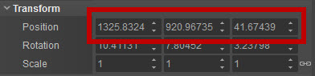
Camera speed has moved to the top-left of the 3D Viewport:
Enabling AI/Physics has moved to the Game menu. It also has a button in the Game toolbar that is displayed by default at the top of the main UI:
Audio related options are now located in the Game -> Audio menu.
The Goto position tool is now located in the Level menu.
Error Report
In older versions of CRYENGINE (up to 3.8.6) a window popped up when an error occurred. From CRYENGINE V, we now have the Notification Center. This is a centralized place where errors, warnings and ongoing tasks as well as completed tasks and other useful information are displayed:
| Old (MFC) | New (Qt) |
|---|---|
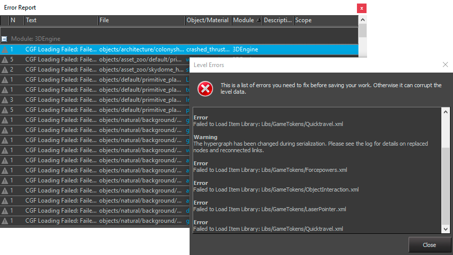 | 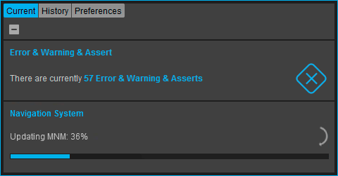 |
Asset Browser/Texture Browser
Among other changes that come with the latest revision of the Sandbox Editor it's important to mention that new Asset Browser is NOT the same or just a visually improved old Asset or Texture Browser.
The new Asset Browser will (in the future) have a central role in managing assets available for the Sandbox:
| Old (MFC) | New (Qt) | |
|---|---|---|
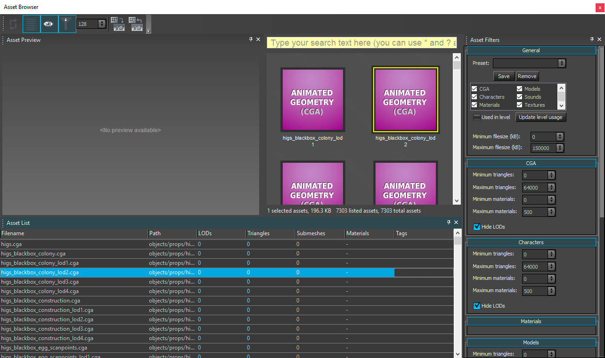 | 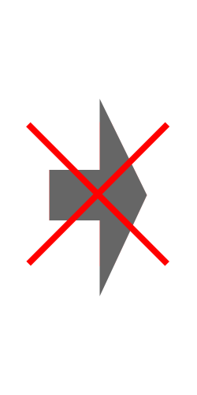 | 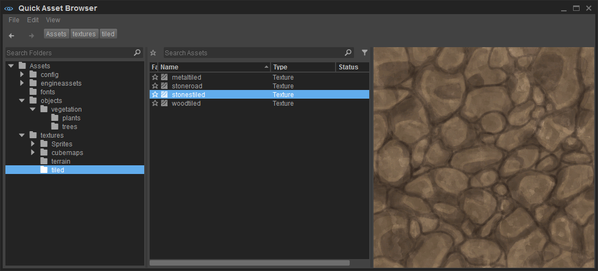 |
Menu Items Rearrangement
In order for the layout to make more sense in the new Qt Editor, the tools and menus have been rearranged, some tools have been combined and some items have been split. However, all the tools that users could find in the 'old' MFC Editor can still be found, but with more purpose and logic behind them.
| Old (MFC) | 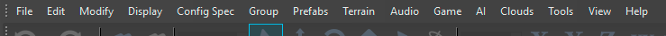 |
|---|---|
| New (Qt) | 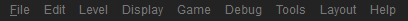 |
Merged Windows Feature
One of the behaviors that many users liked in the 'old' MFC Editor was that the Sandbox and its windows were shown as a single tab on a task bar. For some users “alt tabbing” between tools is cumbersome and ineffective, so there is an option in the new Qt Editor under the Preferences menu that allows for the same behavior that could be found in the 'old' MFC Editor:
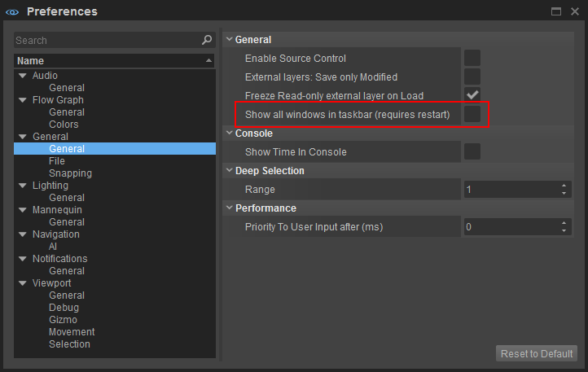
Please note that by default the UX is designed with the above option set to 'off'. Windows management will be less efficient once the Sandbox Editor has more complex tools with more sub-windows. Also the child windows will be obscured, thus making it more cumbersome to use. For example: the Asset System will give one window for each asset the user wants to have open, hence many windows will very likely be hidden behind other bigger windows and without the user even noticing it.